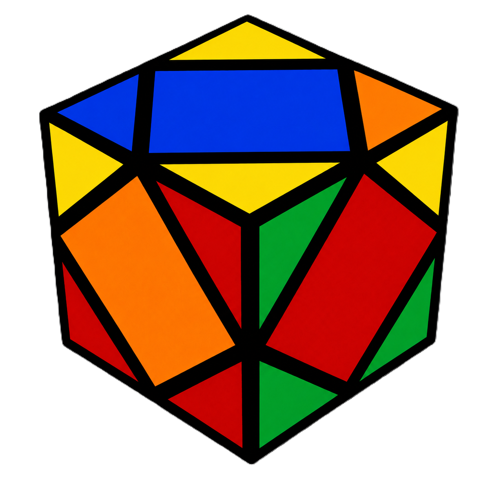
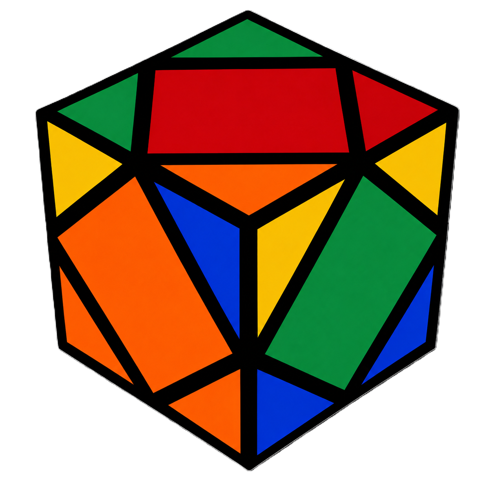

Step 1 — White Side
Locate the White center piece and bring the 4 white corner pieces up around it so their side colors match each other (forming a complete colored outer layer intuitively):
- Easy insertion
- Flipped corner
- Facing down
If a white corner is on the bottom layer, rotate it into the top slot.
If a corner piece isn't oriented correctly, rotate it out of place on the bottom layer to change its orientation, then bring it up.
If white is on the bottom facing straight down, move it to the side first before bringing it up.
Step 2 — Yellow Corners
Turn the cube upside down so the completed White layer is on the bottom. Look at the 4 yellow corner pieces on top.
- Case A (2 corners facing up, 2 facing out)
- Case B (0 yellow corners facing up - "Headlights" case)

Hold the cube so one unsolved yellow corner faces Front and the other faces Left. Do the Sledgehammer once. This brings you to Case B.

Hold the cube so the two matching yellow corner stickers are on the Right. Do the Sledgehammer once. All 4 yellow corners will now point up!
Step 3 — Yellow Center
With White on the bottom and all 4 Yellow corners pointing up:
- Hold the Yellow center so it is facing the Back.
- Do the Sledgehammer once.
- Rotate the whole cube 180° horizontally.
- Do the Sledgehammer once more.
The Yellow center is now fully solved on top!
Step 4 — Remaining Side Centers
With White on the left and Yellow on the right, only 3 or 4 centers are left to solve.
- 3 Unsolved Centers
- 4 Unsolved Centers
Hold the cube so the face with opposite colors (e.g., Red center on Orange face / Green center on Blue face) is in the Front.
Do the Sledgehammer once → Rotate 180° → Do the Sledgehammer once.
Hold any unsolved center in front. Do the Sledgehammer once → Rotate 180° → Do the Sledgehammer once. This will reduce it to the 3-center case above!